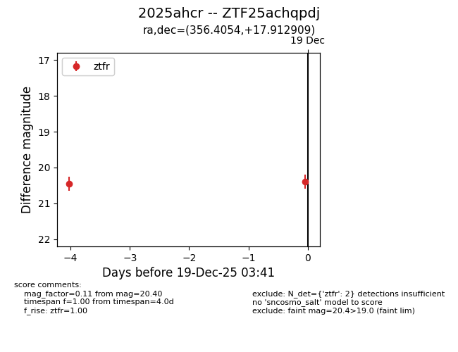
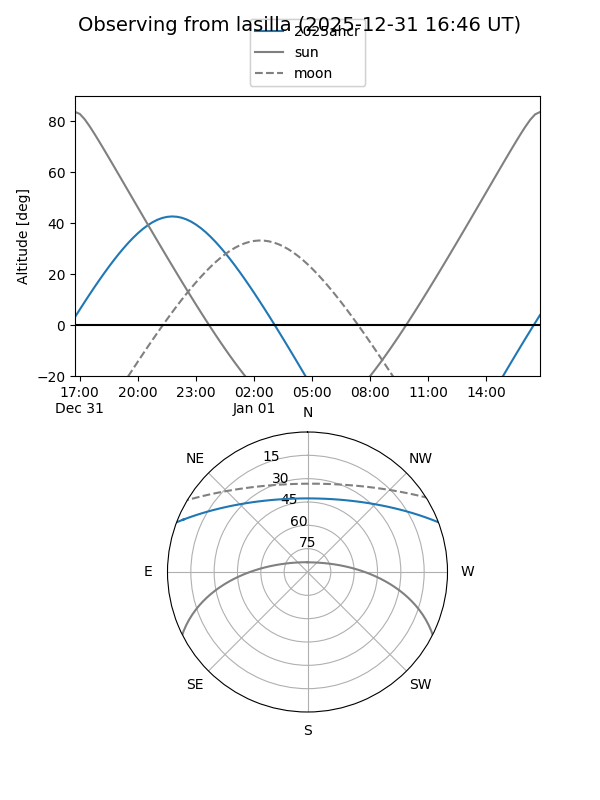
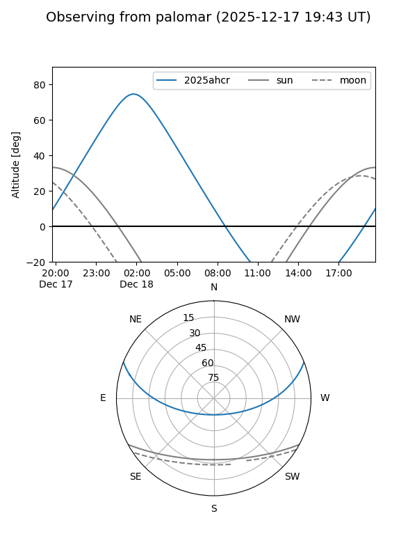

2025ahcr
Target 2025ahcr at 2026-01-09 12:49
Aliases and brokers:
FINK: link
Lasair: link
ALeRCE: link
TNS: link
YSE: link
alt names
ZTF25achqpdj (ztf,fink_ztf)
2025ahcr (tns,yse)
Coordinates:
equatorial (ra, dec) = 356.4054,+17.91291
equatorial (HMS+DMS) = 23:45:37.29,+17:54:46.47
galactic (l, b) = (101.5918,-42.21525)
Flags:
Photometry:
last ztfg=20.37, ztfr=20.40
1 ztfg, 2 ztfr detections
Lightcurve

Visibility


Additional plots